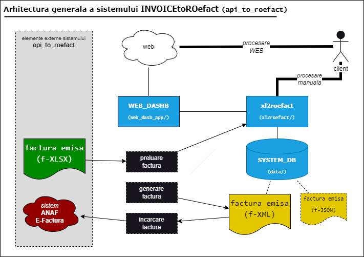

INVOICEtoROefact ↵

RENware Software Systems
INVOICEtoROefact
Cuprins:
Acest sistem va asigura incarcarea facturilor emise in sistemul ANAF E-Factura.
Componentele sistemului
Sistemul ofera urmatoarele componente:
- xl2roefact
- web2roefact
- xl2roefact PyPi
- invoice template
Descrierea tuturor acestora poate fi accessata aici.
Date identificare
- p/n:
0000-0095 - code-name:
api_to_roefact - commercial name: INVOICEtoROefact
- eDataSheet
- git
- copyright: RENware Software Systems
- author: Petre Iordanescu (petre.iordanescu@gmail.com)
- general system license
RENware Software Systems
Componentele sistemului
Cuprins:
Sistemul consta din mai multe componente toate avind acelasi obiectiv central: emiterea de facturi si procesarea facturilor emise existente deja. Faptul ca sunt mai multe componente asigura mai multe cai alternative de a atinge obiectivul central, cai ce pot fi utilizate in paralel (concurent, in acelasi timp) in functie de "dotarea tehnica" a fiecaruia, de afinitatea fiecaruia la un "gen" de sisteme sau pur si simplu de preferinta de moment a fiecaruia.
Componente
Sistemul ofera urmatoarele componente:
Facilitatile si functionalitatile generale (pe scurt) ale fiecareia din acestea sunt prezentate mai jos. (Pentru intelegerea facilitatilor unei componente a se citi sectiunea Criterii de clasificare)
xl2roefact
Aplicatie linie de comanda pentru procesarea facturilor. Facilitati:
- OpM CLI
- OpM WEB
- INp XLSX
- INp JSON
- INp FORM
- EXp JSON
- EXp XML
- EXp EXCEL
- EXp PDF
- R2R
- ROeF
web2roefact
Aplicatie web pentru procesarea facturilor. Facilitati:
- OpM CLI
- OpM WEB
- INp XLSX
- INp JSON
- INp FORM
- EXp JSON
- EXp XML
- EXp EXCEL
- EXp PDF
- R2R
- ROeF
xl2roefact PyPi
Pachet (biblioteca) public Python utilizabil pentru dezvoltare / extindere aplicatii proprii. Facilitati:
- OpM CLI
- OpM WEB
- INp XLSX
- INp JSON
- INp FORM
- EXp JSON
- EXp XML
- EXp EXCEL
- EXp PDF
- R2R
- ROeF
invoice template
Sablon factura in format Office Excel. Facilitati:
- OpM CLI
- OpM WEB
- INp XLSX
- INp JSON
- INp FORM
- EXp JSON
- EXp XML
- EXp EXCEL
- EXp PDF
- R2R
- ROeF
Criterii de clasificare
In scopul identificarii mai usoare a componentelor necesare acestea sunt clasificate dupa urmatoarele criterii:
-
OpM modul de operare al componentei:
- CLI specifica o componenta ce va fi executata in mod linie de comanda (Windows din
Command, Linux dinTerminal) - WEB specifica o componenta ce va fi accesata dintr-un browser
- CLI specifica o componenta ce va fi executata in mod linie de comanda (Windows din
-
INp modul de introducere si import a facturii:
- XLSX import dintr-un document
Office Excelunde a fost deja introdusa anterior preluarii. Ca si instrument de introducere poate fi folosit oricare din cele ce permit salvarea / exportul in formatXLSX(alte formate, in special cel anterior -XLSnu sunt importabile - ci trebuiesc "convertite" la formatulxlsx) - JSON import din format
JSON - FORM factura se poate introduce manual direct in sistem, acesta punind la dispozitie un formular dedicat acestei operatii
- XLSX import dintr-un document
-
EXp formatul de exportare a facturilor1:
- JSON format folosit pentru interschimbarea, interfatarea datelor cu sisteme standard
REST(de exemplu Oracle EBS) - XML format folosit pentru interschimbarea, interfatarea datelor cu sisteme standard
SOAP2 (de exemplu RO eFact, SAP) - EXCEL format Office Excel
xlsx -
PDF format Adobe PDF tiparibil
-
R2R specifica faptul ca acea componenta poate fi folosita ca atare, fara o instalare prealabila ("ready to run") altfel aceasta trebuie instalata inainte de utilizare
-
ROeF specifica faptul ca acea componenta permite incarcarea automata3 a facturii in sistemul ANAF SPV RO eFact
Note
-
Exportul facturilor in formatele
EXCELsi respectivPDFse face utilizind formatul vizual al documentului din componentainvoice template↩ -
schemele
XMLrespectate sunt:"xmlns": "urn:oasis:names:specification:ubl:schema:xsd:Invoice-2","xmlns:cbc": "urn:oasis:names:specification:ubl:schema:xsd:CommonBasicComponents-2","xmlns:cac": "urn:oasis:names:specification:ubl:schema:xsd:CommonAggregateComponents-2","xmlns:ns4": "urn:oasis:names:specification:ubl:schema:xsd:CommonExtensionComponents-2","xmlns:xsi": "http://www.w3.org/2001/XMLSchema-instance","xsi:schemaLocation": "urn:oasis:names:specification:ubl:schema:xsd:Invoice-2 http://docs.oasis-open.org/ubl/os-UBL-2.1/xsd/maindoc/UBL-Invoice-2.1.xsd"↩ -
incarcarea automata a facturii in sistemul
ANAF RO eFacteste conditionata de configurarea respectivei componente cu credentialele necesare autentificarii in acest sistem (altfel acesta informatie va fi ceruta utilizatorui pentru introducere manuala) ↩
Ended: INVOICEtoROefact
xl2roefact ↵
RENware Software Systems
xl2roefact
Cuprins:
- xl2roefact
- Facilitati
- Instalarea
- Configurarea aplicatiei xl2roefact
- Comenzile aplicatiei
- Practici si regului referitoare la continutul facturilor din Excel
- Tutorial utilizare aplicatie
- Aspecte tehnice referitoare la formatul fisierului JSON aferent facturii
- Descarcare (download) aplicatie xl2roefact CLI
- Date identificare
- License
- Note
Facilitati
Aceasta componenta este "totul despre crearea de facturi electronice" din formatul Excel office (xlsx). Aplicatia poate genera factura in format JSON, XML, PDF si o poate incarca in sistemul RO E-Fact1.
Aceasta componenta ofera urmatoarele facilitati (acestea fiind obiectivele fundamentale ale componentei):
-
transformarea facturilor din Excel in formatul
XMLcerut de catre sistemul ANAF RO E-Fact pentru incarcare -
incarcarea acestora in sistemul ANAF RO E-Fact1
-
transformarea facturilor din Excel intr-un format
JSONintermediar, independent de platforma si care permite integrarea acestora cu alte sisteme (standard REST) -
generarea facturii in format PDF pentru transmiterea acesteia catre client, semnarea electronica, tiparirea si arhivarea acesteia in format fizic (in general manipularea facturii in format "human readable")
Componenta ofera doua instrumente pentru realizarea si indeplinirea acestor obiective:
-
xl2roefacto aplicatie de tip linie de comanda (disponibila pentru sistemele de operare Windows, Linux si MacOS) -
xl2roefact PyPio blioteca standard Python utilizabila pentru dezvoltari proprii in scopul extinderii altor sisteme existente (custom development)
Instalarea
Instalarea este diferita pentru cele doua componente:
- aplicatia de tip linie de comanda / consola (descrisa in continuare)
- biblioteca “standard Python package wheel" (descrisa in al document, pe linkul afisat)
Instalarea aplicatiei xl2roefact
Pachetele de instalare se gasesc in directorul dist/ ca arhive ZIP. Pachetele disponibile contin in numele lor versiunea de aplicatie utilizata si sistemul de operare pentru care sunt disponibile:
MSIpachet instalare pentru *WindowsDEBpachet instalare pentru Linux Debian (verificati disponibilitatea pentru varianta sistemuluu de operare folosit de dvs)EXEexecutabil Windows in format "portabil" (un singur fisier)- NOTA: pentru echivalent utilizare portabila pentru Linux se va instala biblioteca Python (vezi sectiunea urmatoare) duoa care devine utilizabil scriptul Python "ca orice alta comanda Linux"
Configurarea aplicatiei xl2roefact
Parametrii de configurare a plicatiei se gasesc in fisierul config_settings.py. Acestia sunt sub elaborati in limbaj Python prin utilizarea conventiilor de constante conform recomandarilor PEP (numele capitatlizat) si sunt acompaniti de linii de explicatii privind aplicabilitatea lor.
Configurare aplicatiei se poate face interactiv si din aplicatie. Pentru a obtine help referitor la detaliile comenzi se va folosi
xl2roefact settings --help
Comenzile aplicatiei
Interfata aplicatie este realizata utilizind conventiile si practicile uzuale pentru aplicatii tip linie de comanda consola. Pentru informatii privind comenzile se poate folosi optiunea de help, dispobilia atit la nivelul general:
xl2roefact --help
xl2roefact [COMMAND] --help
Lista comenzilor:
-
about - Afiseaza informatii despre aceatsa aplicatie (copyright, scop, etc)
-
settings _ Afiseaza parametrii de configurare a aplicatiei. Vezi sectiunea de configurare a aplicatiei
-
xl2json - Transforma fisierul (fisierele) Excel in forma JSON pentru utilizare ulterioara ca forma de date standardizat pentru schimbul de informatii cu alte sisteme electronice
Detalii comenzi:
xl2roefact
function called when no command is invoked and to provide only application version (for external users to test it!).
Usage:
xl2roefact [OPTIONS] COMMAND [ARGS]...
Options:
--version show application version
--install-completion Install completion for the current shell.
--show-completion Show completion for the current shell, to copy it or
customize the installation.
about
provide a short application description.
Usage:
xl2roefact about [OPTIONS]
settings
display application configuration parameters and settings that are subject to be changed by user.
Usage:
xl2roefact settings [OPTIONS]
xl2json
extract data from an Excel file (save data to JSON format file with the same name as original file but .json extension).
Args:
file_name: files to process (wildcards allowed).
files_directory: directory to be used to look for Excel files. Defaults to invoice_files/. NOTE: if default directory does not exists will consider current directory instead
verbose: show detailed processing messages" Defaults to False.
Usage:
xl2roefact xl2json [OPTIONS] [FILE_NAME]
Options:
[FILE_NAME] files to process (wildcards allowed)
[default: *.xlsx]
-d, --files-directory DIRECTORY
directory to be used to look for Excel files
(if default directory does not exists will
consider current directory instead).
[default: invoice_files/]
-v, --verbose show detailed processing messages
Practici si regului referitoare la continutul facturilor din Excel
Acest capitol se refera la modul in care este "tratat" continutul fisierului Excel cu factura, mai exact la modalitatea in care informatia facturii este cautata, identificata si gasita in scopul de a fi salvata in oricare din formatele de "factura electronica / E-Fact".
Utilizarea sablonului de factura Excel ce este livrat impreuna cu aplicatia ESTE O VARIANTA DE LUCRU RECOMANDATA, dar nu obligatorie. Chiar si in cazul utilizarii acestuia, prin modificarea "structurii" acestuia, informatia poate ajunge nerecognoscibila / neidentificabila total sau partial daca nu sunt urmate regulile expuse.
In general trebuie facuta diferenta intre datele facturii si modul in care aceasta va fi tiparita (va aparea la tiparire / previzualizare).
Mai exact continutul informational al facturii nu trebuie nici confundat si nici mixat cu formatul de afisare al acesteia (layout). Pentru acesta din urma se recomanda a fi folosite cu precadere regulile de formatare din Excel si nu cele stocare a datelor. Un exemplu este un numar zecimal oarecare unde:
- una este valoarea introdusa intr-o celula (de ex cu 3 zecimale) si
- alta este valoarea afisata (cu 2 zecimale) - aceasta din urma trebuie obtinuta prin formatarea celulei respective de a afisa 2 zecimale prin rotunjire insa valoarea efectiva trebuie sa fie cea originala cu 3 zecimale, lucru (diferenta) care se poate vedea la editarea continutului celulei.
Tutorial utilizare aplicatie
Organizarea informatiei
Aplicatia xl2roefact "promoveaza" structurarea informatiei procesate astfel incit sa fie evitata situatia "de aglomerare" a directorului curent cu fisiere ce trebuiesc identificate si izolate in situatia in care se fac procesari in masa (pe mai multe fisiere / facturi sursa).
Astfel, aplicatia se asteapa ca fisierele Excel sursa (adica facturile de procesat) sa fie copiate in directorul invoice_files/ de unde vor fi citite si tot aici vor fi create fisierele rezultate (JSON, XML, etc). Acest director este relativ la directorul curent de unde este lansata aplicatia si considerat "implicit" cu acest nume dar daca se doreste un alt director acest lucru poate fi facut folosind parametrul --files-directory (sau prescurtat -d) la lansarea aplicatiei astfel:
xl2roefact -d "calea si numele directorului dorit"
Nota
Ghilimelele sunt necesare numai daca numele si calea (path) contin caracterul spatiu.
Exemple:
-
pentru stabilirea directorului curent ca sursa pentru fisierele factura Excel:
xl2roefact -d ./ -
procesarea tuturor facturilor facturilor din luna iunie, copiate intr-un director dedicat sub directorul curent:
xl2roefact -d ./facturi_iunie/
Exemplu de procesare a unei facturi
- se creaza directorul
invoice_files - se copiaza factura
factura_A.xlsxin acest director apoi se revine in directorul anterior daca acesta a fost schimbat pentru efectuarea copierii - se lanseaza aplicatia:
xl2roefact xl2json
In urma acestor operatii, in directorul invoice_files vor rezulta:
📠invoice_files/
├── 📄 factura_A.xlsx # fisierul Excel original
└── 📄 factura_A.json # fisierul JSON rezultat in urma procesarii
factura_A.xlsxca fiind fisierul Excel original cu facturafactura_A.jsonacesta fiind fisierul format JSON rezultat in urma procesarii si ce poate fi folosit pentru interschimbarea electronica a informatiei intre sisteme
Aspecte tehnice referitoare la formatul fisierului JSON aferent facturii
Acest fisier este cel generat de catre aplicatie in urma executiei acesteia cu comanda xl2json. Formatul JSON utilizat contine:
- informatiile aferente facturii (cheie:
Invoice) - o harta de ajutor in conversia formatului JSON in formatul XML acceptat de sistemul RO E-Fact (cheie
meta_info.map_JSONkeys_XMLtags) si definititiile XML aferente (cheiemeta_info.invoice_XML_schemes) - alte informatii despre fisierul Excel prelucrat (alte chei din
meta_info) - datele preluate din formatul original Excel (cheie
excel_original_data) - acestea sunt utile pentru depanare in caz ca aceasta este necesara in cazul specific al fisierului Excel folosit de dvs
Structura de baza a acestui fisier este:
{
"Invoice": {...},
"meta_info": {...},
"excel_original_data": {...}
}
Cheile de la primul nivel contin:
Invoice- datele efective ale facturiimeta_info- informatii referitoare la procesarea facturii si mapa de conversie a cheiiInvoicedin formatulJSONin formatulXMLcerut de sistemul RO E-Factexcel_original_data- informatiile originale din fisierul Excel, asa cum au fost ele identificate si gasite precum si locatia (adresele celulelor). Aceste informatii sunt utile in cazul in care exista neclaritati in urma procesuluicde conversie pentru "a intelege" de unde si cum arata informatiile originale din fisierul Excel
Pentru detalii suplimentare despre formatul JSON trebyie consultata componenta referitoare la biblioteca xl2roefact destinata dezvoltarii software.
Descarcare (download) aplicatie xl2roefact CLI
- 0.1.20.dev invoice customer address MSI installer win64
Arhiva versiuni publicate disponibile
-
0.1.19.dev invoice customer and partial invoice total values calculations MSI installer win64
-
0.1.18.dev invoice customer CUI partial invoice total values calculations MSI installer win64
Date identificare
- part number (p/n):
0000-0095-xl2roefact - producator si copyright: RENWare Software Systems
- author: Petre Iordanescu (petre.iordanescu@gmail.com)
License
Note
Ended: xl2roefact
web2roefact ↵
Ended: web2roefact
xl2roefact PyPi ↵
xl2roefact PyPi Library
System modules
xl2roefact main and basic modules are:
rdinvread an Excel file and extract invoice data to a JSON file formatwrxmlwrite, convert the JSON invoice file to a XML file format, respecting schemes required by RO EFact standardchkxmlcheck generated XML fileldxmlload an invoice (ie, its XML associated file) to ANAF SPV systemchkisldcheck if an invoice is already loaded in ANAF SPV systemconfig_settingsdefine system settings & parameters mainly used in invoice info / data detection and extract from invoice Excel format fileapp_clicontains the code forxl2roefactapplication command line (CLI) format
Below is presented the skeleton logic of those modules which and where is relevant ie meaning where is not enough obvious from code or code complexity exceed usual limits (for example nore than 100 lines of code per function). For more technical details and specification regarding modules see 810.05a-xl2roefact_DLD_specs.md file
rdinv module logic
Main function of rdinv module is rdinv(...) which has the following logic sections which are in strict sequence in presented order:
-
search of
invoice_items_areasub-table. This area is expected to contain invoice lines and is "processed" first because it is more structured and easier to identify; after its identification the header area is considered upper of it and footer area below it -
solve
invoice_items_areain 2 step.... In this step the code-data-variables of items area will be initialized in order to hold information that will be found -
localize and mark areas for... section that follows natural the previous one by initializing code-data-variables forcheader and footer areas to hold their corresponding information
-
solve
invoice_header_areadetailed initialize of header area code-data-variables -
ReNaSt-RegNameStrategy section that identify and extract the legal registered name of invoice customer -
section to ( Excel data )--->( JSON ) format preparation and finishing section which prepare Excel original data found to be be saved as JSON as a more "electronic interchangeable" structure
-
for more details about code logic description and presentation, please contact RENware Software Systems
Install library
Library can be installed using 2 methods:
- install from PyPi
- install from distribution packages
Install from PyPi
The library installation should be done using standard Python instruments:
pip install xl2roefact
Install from distribution packages
To install from distribution packages first download the package version intended to install (see download section), choose the package type (if you have no special option, then choose WHEEL format) and install it using pip as any other Python library installation (detailed in Python official documentation).
Working directories
Below is a short description of most important directories that will (can !) be found on local development environment.
-
invoice_files/default directory for Excel files which is intended to be processed -
build/this directory which will contain intermediary files resulted from building CLI application, library distribution parts, etc. Directory is subject of.gitignore -
dist/package files (wheels, dist), Windows executables, etc, generally all files subject of "public" distribution and download -
test_*/contains test invoice samples (from client, a RENware one, a 3rd party one) and some useful specs in dev & test process
Aspecte tehnice referitoare la formatul fisierului JSON aferent facturii
Acest fisier este cel generat de catre aplicatie in urma executiei acesteia cu comanda xl2json. Structura de baza a acestui fisier este:
{
"Invoice": {...},
"meta_info": {...},
"excel_original_data": {...}
}
Cheile de la primul nivel contin:
Invoice- datele efective ale facturiimeta_info- informatii referitoare la procesarea facturii si mapa de conversie a cheiiInvoicedin formatulJSONin formatulXMLcerut de sistemul RO E-Factexcel_original_data- informatiile originale din fisierul Excel, asa cum au fost ele identificate si gasite precum si locatia (adresele celulelor). Aceste informatii sunt utile in cazul in care exista neclaritati in urma procesuluicde conversie pentru "a intelege" de unde si cum arata informatiile originale din fisierul Excel
An example of JSON generated file is available here
Detailed design technical documentation
Download xl2roefact library
Arhiva versiuni publicate disponibile
- 0.1.19.dev invoice customer and partial invoice total values calculations WHEEL
-
0.1.19.dev invoice customer and partial invoice total values calculations DIST
-
0.1.18.dev invoice customer CUI partial invoice total values calculations WHEEL
- 0.1.18.dev invoice customer CUI partial invoice total values calculations DIST
Ended: xl2roefact PyPi
invoice template ↵
Copyright (C) RENware Software Systems
invoice template
Instalarea sablonului de factura emisa
Aceasta componenta consta dintr-un director (ce nu necesita instalare speciala ci simpla copiere locala acolo unde va fi utilizat). Acest director contine:
-
fisierul pentru factura
invoice_template_CU_tva.xlsxce este disponibil pentru descarcare aici -
directorul
released_packages/ce contine versiuni anterioare de sablon ce sunt inca suportate -
prezentul document
Recomandari in utilizarea sablonului
Aceasta sectiune se refera la modul in care ar trebui "tratat" continutul fisierului Excel cu factura in conditiile in care se intentioneaza ca aceasta sa fi procesata ulterior cu sistemul INVOICEtoROeFact. Acest sablon este general valabil (este un fisier Excel ca oricare altul) deci in acest caz este important a "constientiza" faptul ca informatia aferenta facturii din Excel va fi cautata, identificata si gasita in scopul de a fi salvata in formatele de factura electronica (utilizarea acestui sablon de factura Excel impreuna cu sistemul INVOICEtoROeFact ESTE O VARIANTA DE LUCRU RECOMANDATA, dar nu obligatorie).
Astfel se recomanda ca acest sablon sa fie utilizat asa cum este livrat, fara a efectua modificari majore in structura sa cum ar fi:
-
modificarea formatelor (de tip de date) celulelor in scopul unei afisari "mai frumoase"
-
adaugarea de informatii prin concatenare de siruri de caractere sau orice alte metode de a altera continutul vizibil al celulelor in scopul unei afisari "mai frumoase"
-
modificarea locatiilor celulelor prin inserarea sau stergerea de linii, coloane sau celule noi
In general trebuie facuta diferenta intre datele facturii si modul in care aceasta va fi tiparita (va aparea la tiparire / previzualizare).
DETALII TEHNICE:
Continutul informational al facturii nu trebuie nici confundat si nici mixat cu formatul de afisare al acesteia (layout). Pentru acesta din urma se recomanda a fi folosite cu precadere regulile de formatare din Excel si nu cele stocare a datelor. Un exemplu este un numar zecimal oarecare unde:
- una este valoarea introdusa intr-o celula (de ex cu 3 zecimale) si
- alta este valoarea afisata (cu 2 zecimale) - aceasta din urma trebuie obtinuta prin formatarea celulei respective de a afisa 2 zecimale prin rotunjire insa valoarea efectiva trebuie sa fie cea originala cu 3 zecimale, lucru (diferenta) care se poate vedea la editarea continutului celulei.
Descarcare (download) sablon factura
Arhiva versiuni publicate disponibile
NOTA: versiunile "lipsa" din lista de mai jos nu mai sunt disponibile sau sunt versiuni interne nepublicate.
License
Ended: invoice template
Help ↵
Manuale de utilizare ↵
 INVOICEtoROefact System
INVOICEtoROefact System
(c) 2023 RENware Software Systems
Catalogul manualelor de utilizare
Cuprins:
- ...
Ended: Manuale de utilizare
Manuale de admistrare ↵
 INVOICEtoROefact System
INVOICEtoROefact System
(c) 2023, 2024 RENware Software Systems
Catalogul manualelor de configurare si administrare
Cuprins:
- ...
Ended: Manuale de admistrare
Cerintele sistemului ↵
RENware Software Systems
Propunere tehnica
Cuprins:
- Client: n/a - not public
- Data: 2023-Noiembrie
Codificarea documentelor
- codificarea numelor documentelor si a proceselor este facuta in conformitate cu metodologia RENware SDEVEN
Cuprins:
Aria de cuprindere
Solutiile propuse prin aceasta propunere tehnica sunt:
-
INVOICEtoROefact (code-name
api_to_roefact) integrare Sistemul National de Facturi Emise RO e-Factura descriere si cerinte aici -
PayValidaBoa (code-name
payments_validation_board) Flux aprobare facturi primite pentru ordonantare la plata descriere si cerinte aici
In continuare se prezinta o serie de considerente generale valabile pentru toate sistemele din aria de acoperire.
Considerente generale de securitate
-
(RSEC-01) fisierele de configurare a sistemelor (fiind format text
UTF-8) vor avea caownerun utilizator dedicat sistemului respectiv sau utilizatorulroot. Numai acesti doi utilizatori pot avea accesRWla aceste fisiere -
(RSEC-02) toate documentele de provenienta externa sistemelor vor fi "purtatoare" ale unui certificat digital ce atesta validitatea documentelor. Acest certificat va fi de preferinta de tip "semnatura electronica" dar nu obligatoriu calificata. Este suficient un simplu certificat (cheie) tip
RSAgenerat intern si distribuit utilizatorilor autorizati sa emita documentele respective. O copie a certificatului (sau a certificatelor daca se vor emite mai multe) ce atesta validitatea unui document va sta pe server in locatii ce sunt conforme cu RSEC-01
Considerente generale privind bazele de date proprii sistemelor
-
(DBS-01) bazele de date vor contine o cheie primara "real primara" (adica avind toate caracteristicile tehnice pentru
PKin sensul uzual cunoscut din teoria bazalor de date). Aceasta cheie va fi de tipChar(32)reprezentind tipuluuid4(cunoscut si caguid) convertit la sir de caractereUTF-8si reversibil ca transformare dinstringinuuid4. Aceasta cheie va fi generata automat si intretinuta de sistem deservind scopuri pur tehnice de referentiere si relationare a datelor. Modificarea manuala nu este permisa putind genera situatii de hazard. -
(DBS-02) bazele de date vor contine si o alta "cheie primara uman recongnoscibila" (
AKin teoria bazelor de date) utilizata in scop de recunoastere si regasire a informatiei de catre utilizatori. Aceasta cheie va avea urmatoarele catacterisrici:- va fi unica, tip
Char(10)(limitarea lungimii se va aplica la introducerea datelo si nu in baza de date) - agnostic case, nu se va face diferenta intre litere mari sau mici (pentru a evita confuziile)
- obligatorie iar daca utilizatorul "nu o doreste" se va default-a la
PK-ulanterior
- va fi unica, tip
-
(DBS-03) bazele de date vor fi intr-unul din formatele: (a) relational sau (b) JSON standard. Pentru bazele de date in format relational va fi preferata o solutie de SGBD tip open source matura, intretinuta in urmatoarea ordine de aplicare:
1.SQLite pentru baze de date ce nu vor depasi 10,000 de inregistrari2.PostgreSQL pentru baze de date ce se esttimeaza ca vor depasi 10,000 de inregistrari3.MariaDB pentru baze de date ce se esttimeaza ca vor depasi 10,000 de inregistrari- prima varianta va fi preferata datoritra "portabilitatii datelor"
- a treia varianta este enumerata ca optiune preferata a utilizatorului la varianta
2.
-
(DBS-04) bazele de date vor folosi numai cimpuri formate standard, clasice si elemetare:
- sir de carectere (
CHARsauVARCHAR) - numere intregi cu semn (
INTEGER) - numere reale cu semn (
FLOAT) - numere combinate a caror valoare poate fi intreg sau real (
NUMBER) - valori logice sub forma intreg cu semn astfel:
1pentru TRUE si0sauNULLpentru FALSE - valori logice sub forma de caracter astfel: prima litera din lista
[Y, y, D, d, T, t]pentru TRUE si orice altceva inclusivNULLpentru FALSE
- sir de carectere (
-
(DBS-05) in cazul bazelor de date relationale, integritatile referentiale vor fi evitate la maximum prin intretinerea datelor numai cu ajutorul aplicatiei sau in cazull necesitatii modificarii manuale a datelor, aceasta modfica re sa fie efectuata numai de personal calificat
-
(DBS-06) informatiile de tip data-timp (data, ora, etc...) vor fi stocate de preferinta sub forma de
Stringin formatul ISO:YYYY-MM-DD HH:MM:SS.nnnnn. -
(DBS-07) informatii de data-timp vor fi stocate avind valori agnostice de "Time Zone" adica vor fi considerate
UTClucru care va permite comparabilitatea acestora indiferent de locatia /zpna de timp de unde au fost generate.
Considerente generale privind auditarea informatiilor
-
Cimpurile de audit ce indica utilizatori:
- (AUD-01) pentru informatiile CONSTIENT GENERATE DE UTILIZATORI (adica generate prin activarea unor controale vizuale, prin lansarea manuala a unei aplicatii, etc), aceste cimpuri vor contine numele tip
usernameal utilizatorului folosit pentru autentificarea in sistem - (AUD-02) pentru informatiile GENERATE DE SISTEM la rulari automate, periodice, de verificare, de validare, etc, aceste cimpuri vor contine textul
system(pentru a evita confuzii cu utilizatori reali la nivel de sistem de operare)
- (AUD-01) pentru informatiile CONSTIENT GENERATE DE UTILIZATORI (adica generate prin activarea unor controale vizuale, prin lansarea manuala a unei aplicatii, etc), aceste cimpuri vor contine numele tip
-
(AUD-03) Cimpurile de audit ce indica date calendaristice vor respecta standardul ISO fiind in formatul maximal
YYYY-MM-DD hh:mm:ss
 INVOICEtoROefact System
INVOICEtoROefact System
(c) 2023 RENware Software Systems
Propunere tehnica sistem INVOICEtoROefact
Cuprins:
- p/n:
0000-0095 - code-name:
api_to_roefact - commercial name: INVOICEtoROefact
- url propunere tehnica:
http://apitoroefact.renware.eu/commercial_agreement/110-SRE-api_to_roefact_requirements.html - git:
https://github.com/petre-renware/api_to_roefact
Cuprins:
Obiective
Acest sistem va asigura incarcarea facturilor emise in sistemul ANAF E-Factura cu respectarea reglementarilor publicate in acest sens (lista contine si legaturi catre fisierele publicate de catre ANAF):
Vedere de ansamblu a solutiei
Solutia api_to_roefact consta din urmatoarele componente:
-
api_to_roefact.xl2roefactaceasta componenta are rolul de a implementa efectiv obiectivele principale ale sistemului INVOICEtoROefact. Componenta este capabila sa ruleze atit "standalone" (ca linie de comanda CLI) dar si prin utilizarea ei de catre componentaWEB_DASHBsi astfel utilizarea ei in varianta de sistem prezentat "over internet / intranet". Prezentarea detalita a acesteia se gaseste aici. -
api_to_roefact.WEB_DASHBaceasta componenta are rolul de agrega componentele si de a prezenta solutia INVOICEtoROefact "over internet / intranet". De asemenea componenta asigura modulele UI necesare pentru administrarea sistemului. Prezentarea detalita a acesteia se gaseste aici. -
api_to_roefact.SYSTEM_DB.Aceasta componente reprezita baza de date a sistemului INVOICEtoROefact atit partea relationala dar si parteano-sqla acesteia (utilizata pentru eventuale sincrnizari provenite din utilizarea CLI a componenteixl2roefact). Prezentarea detalita a acesteia se gaseste aici.
Figura urmatoare prezinta schematic rolul general al componentelor precum si interactiunea acestora cu mediul exterior sistemului api_to_roefact.

Componenta xl2roefact
-
(RDINV) modul de procesare a fisierului format
XLSXce contine factura si colectare a datelor aferente- INTRARI: fisier format
XLSXce contine factura emisa (cod:f-XLSX) - IESIRI: fisier format
JSONimagine a datelor facturii (cod:f-JSON)
- INTRARI: fisier format
-
(WRXML) modul de generare a fisierului format
XML- INTRARI: fisier
f-JSON - IESIRI: fisier format
XMLconform cerintelor si sistemuluiANAF E-Factura(cod:f-XML)
- INTRARI: fisier
-
(CHKXML) modul de validare a facturii in sistemul
ANAF E-Factura- INTRARI: fisier
f-XML - IESIRI: raport cu eventualele erori de validare 1
- INTRARI: fisier
-
(LDXML) modul de incarcare a facturii in sistemul
ANAF E-Factura- INTRARI: fisier
f-XML - IESIRI: raport cu validarea si identificatorul incarcarii 1
- INTRARI: fisier
-
(CHKISLD) modul de verificare a starii de incarcare a unei facturi emise
- INTRARI: fisier
f-XLSXsau numarul / cheia / codul facturii - IESIRI: valoarea echivalent
TRUEdaca factura a fost deja incarcata sau valoare echivalentFALSEdaca factura nu a fost incarcata 2
- INTRARI: fisier
Formatul fisierelor Excel cu factura
XLSX este sigurul format de fisier acceptat
Diagrama logica de functionare a componentei
flowchart TD
start(["start"])
stop(["stop & \nrepeta ciclul"])
RDINV["procesare a fisierului format XLSX"]
WRXML["generare a fisierului format XML"]
CHKXML["validare a facturii"]
LDXML["incarcare a facturii in sistemul E-Factura"]
CHKISLD["verificare stare de incarcare facturi"]
f-XLSX[\"f-XLSX"/]
f-XML[\"f-XML"/]
f-JSON[\"f-JSON"/]
DBS[("system database")]
loaded{"incarcata?"}
start ---> RDINV
f-XLSX --> RDINV
RDINV ---> f-JSON
RDINV --> CHKISLD
CHKISLD --> loaded
loaded --DA--> stop
loaded --NU--> WRXML
WRXML --> f-XML
WRXML --> LDXML
LDXML --> CHKXML
CHKXML --> stop
CHKXML --> DBS
LDXML ---> DBS...#FIXME explicatii necesare ?...
Componenta WEB_DASHB
...INCOMING... 
Componenta SYSTEM_DB
...INCOMING...
RENware Software Systems
Propunere tehnica sistem PayValidaBoa
Cuprins:
- p/n:
0000-0094 - code-name:
payments_validation_board - commercial name: PayValidaBoa
- url propunere tehnica:
http://apitoroefact.renware.eu/commercial_agreement/110-SRE-payments_validation_board_req.uirements.html - git:
n/a
Cuprins:
Obiective
Acest sistem asigura prezentarea unui "dashboard" cu lista facturilor primite si starea lor de verificare si aprobare interna in vederea ordonantarii lor la plata.
Vedere de ansamblu a solutiei
Sistemul payments_validation_board consta din urmatoarele componente:
-
INV_TOPMNG_BOARD- aceasta componenta prezinta pentru MANAGEMNTul tip CFO lista facturilor primite si starea lor referitor la validarea si aprobarea lor finala si un control pentru APROBARE FINALA sau BUN DE PATA. -
INV_CHK_BOARD- aceasta componenta prezinta pentru VERIFICATORI si APROBABTORI lista fa/turilor primite si diverse controale pentru aprobarea si scrierea de diverse note si observatii. -
INV_NOTIF_BOARDaceasta componenta prezinta notificari referitoare la diversele OBSERVATII si NOTE facture asupra facturilor primite in diverse stadii de aprobare de catre persoanele care efectueaza verificari asupra lor (prin componentaINV_CHK). Notificarile sunt disponibile atit in interfata aplicatiei iar unele din ele pot fi transmise prin mail. -
INV_LD_FOR_APPRV- aceasta componenta permite incarcarea facturilor in fluxul de aprobare. Optiuni de incarcare:- manuala (dintr-un board al aplicatiei)
- automata dintr-un director
- dintr-o baza de date externa sistemului (cu "marcarea" facturilor ce vor trebui incarcate)
- la incarcare (indiferent de metoda) vor trebui specificati (sau dedusi din alte informatii) DESTINATARII ce primesc documentul
-
ADMIN_CFGaceasta componenta permite pentru ADMINISTRATORI diverse OPTIUNI DE CONFIGURARE:- lista utilizatorilor ce fac parte dinfluxul de aprobare
- adresele e-mail ale utilizatorilor
- rolul utilizatorilor in accea ce priveste fluxul de aprobare facturile primite
- certificate si semnaturile de certificare a "semnaturilor" de aprobare
- ...
Figura urmatoare prezinta schematic rolul general al componentelor precum si interactiunea acestora cu mediul exterior sistemului payments_validation_board.
...IN PROGRESS...
Cerinte functionale generale
...INCOMING...
Componenta xxx
...INCOMING...
RENware Software Systems
Optiuni tehnice
Cuprins:
Acest document prezinta posibilele optiuni tehnice la cele doua sisteme, optiuni care vor trebui agreate si (preferabil) planificate cel putin din punct de vedere al prioritatii.
Optiuni sistem INVOICEtoROefact
Forma de utilizare si interactionare
- ☐ (INVOICEtoROefact-RQ-01) - varianta CLI (command line) cu utilizare "individuala"
- ☐ (INVOICEtoROefact-RQ-02) - varianta WEB cu utilizare centralizata
Configurabilitate
- ☐ (INVOICEtoROefact-RQ-03) -
varianta in care se prelucreaza un model de fisier
Excelin care sunt "fixate si blocate" locatiile celulelor ce contin date relevante - ☐ (INVOICEtoROefact-RQ-04) -
varianta in care structura si formatul fisierului
Excelcontin "cuvinte cheie" ce determina regasirea date relevante (de exemplu textul "Client:" intr-o celula semnifica inceperea unei zone cu datele clientului de la acea celula in jos si pina prima celula necompletata ce va fi gasita)
Recomandari sistem INVOICEtoROefact
-
varianta (INVOICEtoROefact-RQ-01) este recomandata ca fiind "aproape obligatorie" deoarece chiar si in varianta WEB ea va trebui scrisa intr-o forma neutilizabila direct (sub forma de functie a sistemlui). Transformarea acestei functii in varianta CLI va permite o executie portabila ("la purtator") si offline (in situatii extreme se poate folosi doar fisierul
XMLgenerat si acesta va putea fi manual incarcat in ANAF-SPV). Informatia privind "starea de incarcare a facturii" va fi oricum salvata si in fisierul Excel aferent facturii si va putea fi preluata de catre varianta WEB pentru centralizarea informatiilor- a se vedea si modululLDXMLsi notele de subsol aferente -
optiunea (INVOICEtoROefact-RQ-03) este recomandata ca varianta de start deoarece va permite realizarea unei variante OPERATIONALE (de lucru curent si testare) intr-un termen mai scurt, urmind ca aceasta optiune sa fie gradat extinsa si cu optiunea (INVOICEtoROefact-RQ-04). Aceasta "linie de lucru" nu va induce probleme, avind in vedere ca orice optiune / varianta aleasa ca varianta de start si planificata a fi extinsa va implica si MIGRAREA datelor deja produse la momentul extinderii ei
Optiuni sistem PayValidaBoa
Framework standardizat de orchestrare
- ☐ (PayValidaBoa-RQ-01) - utilizarea unui framework specializat de orchestrare si integrare cu alte sisteme "externe"
- Implicatii: poate mari durata de implementare
- Avantaje: utilizarea ulterioara pentru integrare intre sisteme ce prezita interfata standardizata (REST, SOA, NTFS, EXT4, OAuth, ...)
Semnare electronica a facturilor verificate
- ☐ (PayValidaBoa-RQ-02) - utilizarea de certificat tip "semnatura electronica" pentru autentificarea verificarii facturilor EMBEDDED IN FACTURA
- ☐ (PayValidaBoa-RQ-03) - utilizarea de certificat tip "semnatura electronica" pentru autentificarea verificarii facturilor adiacet facturii - disponibil pentru consultare numai in sistemul PayValidaBoa
- ☐ (PayValidaBoa-RQ-04) - verificarea facturilor nu necesita certificat tip "semnatura electronica" ci simpla informatie existenta in sistemul PayValidaBoa este suficienta
Baza de date 'interna / specifica' sistemului PayValidaBoa
- a se vedea documentul "Considerente tehnice generale", sectiunea "Considerente generale privind bazele de date proprii sistemelor", item "(DBS-03)" pentru opptiuni privind baza de date ce va fi utilizata "pentru operatiuni interne si specifice" de catre sistemul PayValidaBoa
Optiuni generale de implementare
Sistemele tip infrastructura ce vor fi utilizate
- ☐ (general-RQ-01) - server web-HTTP pentru aplicatiile de tip WEB (ATENTIE: sistemele WEB ce vor fi implementate necesita interfata / mod de operare standard
WSGI) - ☐ (general-RQ-02) - sistem de autentificare utilizat (intern aplicatie, Google, Identity Management propriu, ...)
- ☐ (general-RQ-03) - sistemele vor rula pe infrastructura proprie sau aceastea vor rula in infrastructuri gazduite
Alte optiuni 'ad-hoc' (in sedinta)
- ...
- ...
- ...
- ...
- ...
- ...
Ended: Cerintele sistemului
Ended: Help
About ↵
Under construction page
UPCOMING...
RENware Software Systems
INVOICEtoROefact Project
- CHANGELOG
- 0.1 (-#NOTE_wip...)
- 0.1.22.dev invoice customer address optional items (email, reg-com, phone) (#NOTE nxt...)
- 0.1.21.post2
- 0.1.21.post1 fixed missing links in site root index page (240203 10h:30)
- 0.1.21 rollout news in system portal invoicetoroefact.renware.eu (240203 h09:00)
- 0.1.20.dev invoice customer address (240123 h10:00)
- 0.1.19.dev invoice customer and partial invoice total values calculations (240116 h06:00)
- 0.1.18.dev invoice customer CUI partial invoice total values calculations (240105 h08:00)
- 0.1.17.dev fixed all application & package running standard ways (231224 h05:30)
- 0.1.16.dev improving Excel kv-data search with "IN-LABEL" method (231222 h07:00)
- 0.1.15 updated solution portal http://invoicetoroefact.renware.eu/ (231222 h05:00)
- 0.1 (-#NOTE_wip...)
- Archived CHANGELOGs
- Release Notes #TODO this file should be created
CHANGELOG
- For version code structure meaning see SDEVEN methodology document
- with (F) are marked those changes that are features in order to be copied in a RELNOTE file and with (B) bug fixes from versions released
- publishing is made under
publishingbranch <PROJECT ROOT>/doc_src/is the default starting location in a file path (if not clear from context) (ATTN - in production environment isdocs/)<WEB_ROOT>/is the HTTP server root directory, as defaultdocs/and supposed if no other parent is specified
0.1 (-#NOTE_wip...)
- ---[ #TODO general planning board ]---------------------------
* ai un exemplu complet si complet agnostic (trimis Gigi) de factura format XML si PDF tiparit ca sa faci: (1) incarcare XML (2) geenrare PDF (3) compararea variantelor si identificarea schemei XSD + document specificatii ANAF ref sistemul E-Factura (PDF trimis Liviu)
* -#NOTE link Swagger servicii web: `https://mfinante.gov.ro/web/efactura/informatii-tehnice`
* -#NOTE link specif API incarcare fact: `https://mfinante.gov.ro/static/10/eFactura/upload.html#/EFacturaUpload/handleRequest`
- ---[ #TODO short planning board ]---------------------------
* left OPEN ISSUES on: `0.1.7` release (and drop them when fixed)
* [ ] _file `xl2roefact\invoice_files/_PLAN_model_test_factura_generat_anaf.xml`, line 114:_ `<cbc:ID>S</cbc:ID> #FIXME clarify.me_ pare a fi TIPUL PRODUSULUI: (S)erviciu sau ??? (P)rodus sau ???`
-
* ... FUTURE NEW APP COMMANDS :
* `config` - set `config_settings.py` variables (make it INTERACTIVELY using `Rich prompt`)
* `xl2json` - crt_wip... (last upd @ 240123)
* `json2xml` - see module WRXML,
* `json2pdf` - new tbd..,
* `xml2roefact` - see mpdule LDXML
* chk for other commands from doc `https://apitoroefact.renware.eu/commercial_agreement/110-SRE-api_to_roefact_requirements.html#componenta-xl2roefact`
* PACKAGE SOLUTION:
* [ ] publish `xl2roefact` package --> read `TODO_packaging.md`
-
* -#NOTE_PLAN `rdinv` module:
* invoice header
* [ ] wip... invoice header - customer bank, RegCom, email, tel, ...
* [ ] invoice header - supplier (`<cac:AccountingSupplierParty>`)
* [ ] invoice grand totals (there was left a comment ref whole XML structure in rdinv(), line # ~ where build & write "Invoice" key)
-------------------------------------------------------------------------------------------------
0.1.22.dev invoice customer address optional items (email, reg-com, phone) (#NOTE nxt...)
-
tbd... WHEN RELEASE UPDATE make a full chk / review for FIXME & run
pdm build_all -
tbd.optional... [piu_240126] left in
setup.pycomments & example ref how to pre-set MSI build meta information / parameters (obj: default target dir where install, path registration, ...) -
tbd... invoice customer search for other keys: "reg com", "bank / IBAN / cont", "tel", "email" (start in
rdinv()w./line 179 & then 331) -
tbd... use for xl2roefact app help generation IN A markdown page'
https://pypi.org/project/mkdocs-typer/ -
wip... last item used 240206piu_c
0.1.21.post2
- ]wip...240206piu_c test & release: -- create release, -- publish site, -- save deliverable archives
- 240206piu_b install package:
pip install mkdocs-typer& upd backrequirements.txt - 240206piu_a add
mkdocs-typerextension and updatexl2roefact/README.md, sectionComenzile aplicatieipage with generated documentation by this plugin
0.1.21.post1 fixed missing links in site root index page (240203 10h:30)
- 240203piu_a fixed links in
/README.mdfor:xl2roefact PyPientry
0.1.21 rollout news in system portal invoicetoroefact.renware.eu (240203 h09:00)
- 240201piu_a reorganized
xl2roefact*components by disseminating the installable application, which is something available "as is now" just for Windows operating system. For Linux there is no difference between command line application and Python package from an end user point of view. - 240131piu_a
xl2roefact/doc/810.05a-xl2roefact_component.mdclean & transform to "first entry toxl2roefactPyPi" - 240131piu_a updated
mkdocs.yml: cleaned navigation, created version variables, updated default site build directory todocs/, cleared excluded directories entry - 240130piu_b reviewed all changes, update site PDF generator file (mvd
print_page.mdto root) location, fixed navigation. PUBLISHED forxl2roefactcomponent - 240130piu_a reviewed
xl2roefactREADME: cleaned, translated 2 RO, structured to "end user needs" - 240129piu_d updated
xl2roefactto have "Descrierea detliata" link in810.05a-system_components.md. Prepared component to be published: mkdocs.yml navigation & main site README index - 240129piu_c updated all site pages to contain
<small>**RENware Software Systems**</small>&[TOC]after title - 240129piu_b cleanup project docs, requirements, fresh install ==> published site as is at this point (invoice template finished)
- 240129piu_a updated
xl2roefact/README.mdwith section for assets download - 240128piu_e formal versioning
invoice templatecomponent - 240128piu_d updated & closed component
invoice template. Referred in:doc_src/810-DSGN/810.05a-system_components.md- portal first page
- navigation in
mkdocs.yml
- 240128piu_c moved
xl2roefact/excel_invoice_template/directory to root as being distinct component, review it and closed to be published - 240128piu_b revised, updated and closed crt version of
excel_invoice_template/README.md - 240128piu_a updated
xl2roefact/README.md&excel_invoice_template/README.mdfiles, cleared modularization & structure presented in system public site - 240127piu_d Unify main project
/READMEmdwithdoc_src/index.md:- make the same INDEX just in the project root == index / README of whole project
- keep from actual project README.md the section ref project identification and move it to end of file as last section
- 240127piu_c created
/index.htmlto redirect to "real" system index (doc_src/index.md) and prevent usage of projectREADME.mdfile instead - 240128piu_c checked work
240127piu_a,240127piu_b, updatedabout.mdand navigation with ref to sys structure (.../810.05a-system_components.md) - 240127piu_b update system components and their classification (in
.../810-DSGN/810.05a-system_components.md) - 240127piu_a updated
810-DSGN/810.05a-system_components.md, defined a classification usable to quickly find out who-does-what - 240125piu_a updated
mkdocs.ymlby includingmkdocs-same-dirplug-in
0.1.20.dev invoice customer address (240123 h10:00)
-
240123piu_b make a full chk / review for FIXME & run
pdm build_all -
240123piu_a
def_inv_dirissue ref Excel invoices default get directory, see comments inapp_cli.pyfunctionxl2json(...) -
240121piu_a updated
config_settings.py&rdinv.pywith constants:PATTERN_FOR_PARTNER_REGCOM,PATTERN_FOR_PARTNER_IBAN,PATTERN_FOR_PARTNER_TEL,PATTERN_FOR_PARTNER_EMAIL,PATTERN_FOR_PARTNER_BANK -
@CANCELED 240118_admin02 generalize a function
get_partner_info(partner_type: str "customer" | "supplier")to get partner info with partner type as being parameter -
240118piu_a reviewed and cleaned code:
rdinv.rdinv(),config_settings,excel_invoice_template/invoice_template_CU_tva.xlsx(according to updates in testing used invoice) -
240113piu_a to find
cac:PostalAddressand write to:- 1. right set position of key
"cac_PostalAddress"in basic structure (invoice_header_area) - 2a. find excel area ref customer address (...invoice_header_area...)
- 2b. disseminate & save excel original area (...invoice_header_area...)
- 3. get & set
["Invoice"]["cac_PostalAddress"]and all is subsequent keys - 4. update XML - JSON map for item "under"
cac_PostalAddress - 5. defined and included for use
DEFAULT_SUPPLIER_COUNTRYandDEFAULT_CUSTOMER_COUNTRYboth for "RO". Detailed desc and usage inconfig_settings.py&rdinv.rdinv(...) - 6. updated invoice template for country explicit field
- 1. right set position of key
-
240116_admin_01 upd version for 0.1.20
0.1.19.dev invoice customer and partial invoice total values calculations (240116 h06:00)
-
2401_xl2roefact_doc_01
xl2roefactupdate technical documentation, filexl2roefact/doc/810.05a-xl2roefact_component.md -
240112piu_b 95% clean code
rdinv()from customer area identification, from line 204 (kept a DBG print just for area identification (useful for next task ref the same opers but for Supplier)) -
240112piu_a module
app_cli.py, createdcalled_when_no_command(...)function called when no command is invoked and to provide only application version (for external users to test it!) -
240110piu_c
xl2jsonaboutcommand to get version & "nice" LOGO fromxl2roefact/__version__.py, vars__version__&__doc__ -
240110piu_b
xl2roefact/setup.pyref get app version from file when build EXE/MSI test for__version__is correctly get and release -
240110piu.a reviewed & updated
xl2roefactpackageREADME.md+xl2roefact/__version__.pywith an app logo and for text mistyping bugs -
240108piu_c changed
pyproject.tomlfor auto update package version from filexl2roefact/__version__.py(see also opiss 240108piu_b) -
240108piu_b created
xl2roefact/__version__file that contains variable__version__with INTENTION to use inpyproject.tomlfor app version key (in a future issue) -
240108piu_a more items:
config_settings.pycreated entryPATTERN_FOR_PARTNER_ADDRESS& updatedrdinvmodule in constants area- add comments in
app_cli.pyrefdef_inv_dirissue &&... - updated environment dependencies and installed
pyinstallerdevelopment package with intention to make "single EXE" application to be able to run "from USB stick"
-
240107piu_a reviewed
xl2roefactpackageREADME.md:- (c) explained proposed & promoted directory structure used by CLI application
- (b) short invoice JSON file structure
- (a) created first version of tutorial section
-
240106piu_a invoice customer search and persist for "RegistrationName"
0.1.18.dev invoice customer CUI partial invoice total values calculations (240105 h08:00)
-
240105piu_c updated
xl2roefactpackageREADME.mdfile (with new sections for intro to Excel invoice content rules, tutorial TODO, reference to technical doc) -
240105piu_b invoice customer search and persist for "CUI"
-
240105piu_a
rdinv.def get_excel_data_at_label(...)changed strategy for DOWN search-method made it optional with default True (useful for Partners set-of KVs where is supposed to be or IN-LABEL or in RIGHT but NOT DOWN because there is a list of KVs not just one placed anywhere in Excel doc) #TODO tgis is subject of doc update -
240103piu_d
rdinv.def get_excel_data_at_label(...)changed strategy for IN-LABEL search-method to return all string except first word (supposed to be label) separated by space character (old strategy was to get only last work from all string) -
240103piu_c ref invoice customer created in
config_settings.pyPATTERNs for search keysPATTERN_FOR_PARTNER_ID(CUI or ID),PATTERN_FOR_PARTNER_LEGAL_NAME -
240103piu_b calculated item lines VAT amount as
cac_InvoiceLine.LineVatAmmountas raw float value (not rounded to be able to round just invoice TOTAL) -
240103piu_a
rdinv.rdinv()updated JSON -- XML map (part of function_build_meta_info_key(...)) -
240102piu_a
rdinv.rdinv()upd & improved a clear Customer specific XML compliant structure. Targeted this XML structure:<cac:PartyLegalEntity> <cbc:RegistrationName>IORDANESCU PETRE PFA</cbc:RegistrationName> <cbc:CompanyID>21986376</cbc:CompanyID> </cac:PartyLegalEntity> -
240101piu_a clean useless & obsolete project files, test new full build (MSI, Python wheel, documentation) ==> PASS OK
-
231229piu_a invoice customer (
<cac:AccountingCustomerParty>) detect & set area to search for specific keys (like CUI, RegCom, IBAN, ...)- 1. established AREA TO SEARCH for PARTNER data an
_area_to_search(~line 244) - 2. updated
config_settings.pychanged: (for a clear understating of constant scope, because will follow others for specific keys like: "reg com", "CUI", "bank / IBAN / cont", ...)PATTERN_FOR_INVOICE_CUSTOMER_LABEL-->PATTERN_FOR_INVOICE_CUSTOMER_SUBTABLE_MARKERPATTERN_FOR_INVOICE_SUPPLIER_LABEL-->PATTERN_FOR_INVOICE_SUPPLIER_SUBTABLE_MARKER
- 3. set-persist
_area_to_searchfor next steps & save its key-info in associated invoice JSON (for further references) -rdinv()~line 239 - 4. updated main xl2roefact README.md document ref latter changes and app structuring, concepts, ...(ideas evolving :)...
- 5. done code for
cac_AccountingSupplierPartykey by iterating fullinvoice_header_area["customer_area"]structure
- 1. established AREA TO SEARCH for PARTNER data an
-
231228piu_a improved documentation generation:
- updated all modules docstring(s) to a right markdown representation in generated documentation (ex: when use bullets THEN DO NOT indent at 1st level)
- @IMP_NOTE: Changed generated documentation file to
doc/810.05a-xl2roefact_DLD_specs.mdand referred in maindoc/810.05a-xl2roefact_component.mdas this being a final solution for whole project documentation (that generated withmkdocs) - updated
pyproject.toml, [tool.pdm.scripts]table with new generated doc file name (810.05a-xl2roefact_DLD_specs.md)
-
231227piu_b updated
xl2roefact.rdinvmodule ref dropped_chars from internal function names to allow doc generation by PyDoc until will produce a YAML file for PyDoc generator (where will be able to specify concrete list of objects regarding their names) -
231227piu_a generated a first draft of markdown documentation:
- used Pydoc Markdown @
https://niklasrosenstein.github.io/pydoc-markdown/usage/yaml/#yaml-example - results ==>
<PJ_ROOT>/xl2roefact/doc/generated_810.05a-xl2roefact_component.md - created PDM shell command
pdm run(command just for quick remembers:pydoc-markdown -I xl2roefact --render-toc >doc/generated_810.05a-xl2roefact_component.md)
- used Pydoc Markdown @
-
231226piu_b reviewed
xl2roefactall "in use" code and updateddocstrings -
231226piu_a made some useful PDM scripts (ref
pyproject.toml, table section[tool.pdm.scripts]) like build commands for:-
pdm build_wheelPython package, -
pdm build_msiMSI package, -
pdm build_allbuild all packages -
pdm xl2roefactrun xl2roefact command - updated
doc/810.05a-xl2roefact_component.md
-
0.1.17.dev fixed all application & package running standard ways (231224 h05:30)
-
RELEASES:
.<PROJECT>/xl2roefact/dist/xl2roefact-0.1.17-win64.msi<PROJECT>/xl2roefact/dist/xl2roefact-0.1.17.tar.gz<PROJECT>/xl2roefact/dist/xl2roefact-0.1.17-py3-none-any.whl
-
231224piu_a made cli app to run as: Python package main app (
python -m xl2roefact) and as script (python xl2roefact.py) while still letting the Python libraryxl2roefactas importable and use in a programmatic way:- make
.../xl2roefact/app_cli.py(from actual.../xl2roefact/__main__.py) which is complete code of CLI app plus arun()function that just launch it - make
.../xl2roefact/__main__.pythat just importapp_cliforrun()function and call it - change actual
<xl2roefact ROOT/>xl2roefact.pyto importxl2roefact.app_cliforrun()function and call it - test for MSI package builds ref
<xl2roefact ROOT/>xl2roefact.py - clean code, test and close issue:
python xl2roefact.py [OPTIONS] COMMAND [ARGS]...python -m xl2roefact [OPTIONS] COMMAND [ARGS]...
- make
-
231223piu_a multiple changes ref main code:
xl2roefact.pyand libraryxl2roefact, MAINLY createdxl2roefact/__main__.pyas normal of xl2roefact.py
0.1.16.dev improving Excel kv-data search with "IN-LABEL" method (231222 h07:00)
-
231222piu_b build packages for:
- application deployment package ==>
dist/0.1.13-xl2roefact-0.1-win64.msi - cleaned, tested, created packages (saved to ==>
.../880-RLSE/880.90-RLSE Source Code Archives) - updated
pyproject.toml
- application deployment package ==>
-
231222piu_a refactor
rdinv.__get_excel_data_at_label(...)to search in label (named "IN-LABEL" method) -
231220piu_b made a first PDM build: [@ 231220 h09:55] ==> test PASS (both created files in
dist/was "git-ignored") -
231220piu_b refactored
rdinv(...)section "section for search ofinvoice_items_area..." to use__get_excel_data_at_label(...)function` -
231220piu_a refactored
rdinv.__get_excel_data_at_label(...)for returned "label_position" key` -
231219piu_a update
rdinv.__get_excel_data_at_label(...)to return found label value in dictionary as key"label_value" -
231218piu_c
PDMenvironment manager, updatedpyproject.tomlstructures ref package building, still preps to create env, generate lock file... -
231218piu_b CLI application, fixed bug of print settings when deployed from a package (command:
xl2roefact.py settings) -
231218piu_a installed
PDMenvironment manager, updatedpyproject.tomlstructures, nxt to create env, generate lock file...
0.1.15 updated solution portal http://invoicetoroefact.renware.eu/ (231222 h05:00)
- 231222piu_a updated CNAME to
invoicetoroefact.renware.eu
Archived CHANGELOGs
- 0.1.14.dev invoice issue date
- 0.1.13.dev invoice currency
- 0.1.12.dev invoice number
- 0.1.11.dev packaging improvements for app & xl2roefact package
- 0.1.10.dev command interface improved,
msipackage building, invoice template & updated documentation - 0.1.9.dev
xl2roefact.RDINVrunning executable and distribution kit - 0.1.8.dev improved application structure and first executable release
- 0.1.7.dev
xl2roefact.RDINVinvoice items & metadata + OPEN ISSUES - 0.1.6.dev commercial agreement OPTIONS document
- 0.1.5.dev init component xl2roefact for CLI application
- 0.1.4.dev Create system backbone structure
- 0.1.3.dev Enhancing
payments_validation_boardtechnical proposal - 0.1.2.dev Enhancing
APItoROefacttechnical proposal - 0.1.1.dev Elaborating technical proposal
- 0.1.0.dev System raw backbone
Release Notes #TODO this file should be created
- wip... not_yet_created... 0.1